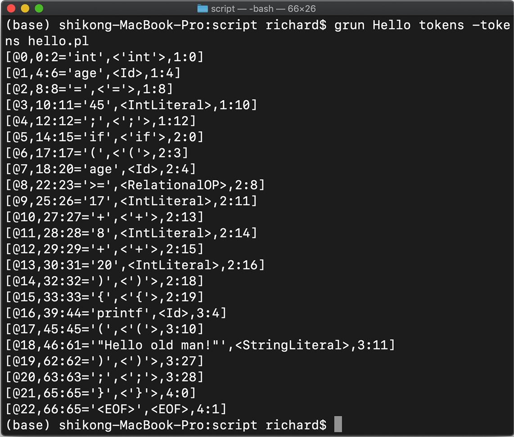

- 00 开篇词 为什么你要学习编译原理？.md.html
- 01 理解代码：编译器的前端技术.md.html
- 02 正则文法和有限自动机：纯手工打造词法分析器.md.html
- 03 语法分析（一）：纯手工打造公式计算器.md.html
- 04 语法分析（二）：解决二元表达式中的难点.md.html
- 05 语法分析（三）：实现一门简单的脚本语言.md.html
- 06 编译器前端工具（一）：用Antlr生成词法、语法分析器.md.html
- 07 编译器前端工具（二）：用Antlr重构脚本语言.md.html
- 08 作用域和生存期：实现块作用域和函数.md.html
- 09 面向对象：实现数据和方法的封装.md.html
- 10 闭包： 理解了原理，它就不反直觉了.md.html
- 11 语义分析（上）：如何建立一个完善的类型系统？.md.html
- 12 语义分析（下）：如何做上下文相关情况的处理？.md.html
- 13 继承和多态：面向对象运行期的动态特性.md.html
- 14 前端技术应用（一）：如何透明地支持数据库分库分表？.md.html
- 15 前端技术应用（二）：如何设计一个报表工具？.md.html
- 16 NFA和DFA：如何自己实现一个正则表达式工具？.md.html
- 17 First和Follow集合：用LL算法推演一个实例.md.html
- 18 移进和规约：用LR算法推演一个实例.md.html
- 19 案例总结与热点问题答疑：对于左递归的语法，为什么我的推导不是左递归的？.md.html
- 20 高效运行：编译器的后端技术.md.html
- 21 运行时机制：突破现象看本质，透过语法看运行时.md.html
- 22 生成汇编代码（一）：汇编语言其实不难学.md.html
- 23 生成汇编代码（二）：把脚本编译成可执行文件.md.html
- 24 中间代码：兼容不同的语言和硬件.md.html
- 25 后端技术的重用：LLVM不仅仅让你高效.md.html
- 26 生成IR：实现静态编译的语言.md.html
- 27 代码优化：为什么你的代码比他的更高效？.md.html
- 28 数据流分析：你写的程序，它更懂.md.html
- 29 目标代码的生成和优化（一）：如何适应各种硬件架构？.md.html
- 30 目标代码的生成和优化（二）：如何适应各种硬件架构？.md.html
- 31 内存计算：对海量数据做计算，到底可以有多快？.md.html
- 32 字节码生成：为什么Spring技术很强大？.md.html
- 33 垃圾收集：能否不停下整个世界？.md.html
- 34 运行时优化：即时编译的原理和作用.md.html
- 35 案例总结与热点问题答疑：后端部分真的比前端部分难吗？.md.html
- 36 当前技术的发展趋势以及其对编译技术的影响.md.html
- 37 云编程：云计算会如何改变编程模式？.md.html
- 38 元编程：一边写程序，一边写语言.md.html
- 加餐 汇编代码编程与栈帧管理.md.html
- 用户故事 因为热爱，所以坚持.md.html
- 第二季回归 这次，我们一起实战解析真实世界的编译器.md.html
- 结束语 用程序语言，推动这个世界的演化.md.html
- 捐赠
06 编译器前端工具（一）：用Antlr生成词法、语法分析器
前面的课程中，我重点讲解了词法分析和语法分析，在例子中提到的词法和语法规则也是高度简化的。虽然这些内容便于理解原理，也能实现一个简单的原型，在实际应用中却远远不够。实际应用中，一个完善的编译程序还要在词法方面以及语法方面实现很多工作，我这里特意画了一张图，你可以直观地看一下。

如果让编译程序实现上面这么多工作，完全手写效率会有点儿低，那么我们有什么方法可以提升效率呢？答案是借助工具。
编译器前端工具有很多，比如Lex（以及GNU的版本Flex）、Yacc（以及GNU的版本Bison）、JavaCC等等。你可能会问了：“那为什么我们这节课只讲Antlr，不选别的工具呢？”主要有两个原因。
第一个原因是Antlr能支持更广泛的目标语言，包括Java、C#、JavaScript、Python、Go、C++、Swift。无论你用上面哪种语言，都可以用它生成词法和语法分析的功能。而我们就使用它生成了Java语言和C++语言两个版本的代码。
第二个原因是Antlr的语法更加简单。它能把类似左递归的一些常见难点在工具中解决，对提升工作效率有很大的帮助。这一点，你会在后面的课程中直观地感受到。
而我们今天的目标就是了解Antlr，然后能够使用Antlr生成词法分析器与语法分析器。在这个过程中，我还会带你借鉴成熟的词法和语法规则，让你快速成长。
接下来，我们先来了解一下Antlr这个工具。
初识Antlr
Antlr是一个开源的工具，支持根据规则文件生成词法分析器和语法分析器，它自身是用Java实现的。
你可以下载Antlr工具，并根据说明做好配置。同时，你还需要配置好机器上的Java环境（可以在Oracle官网找到最新版本的JDK）。
因为我用的是Mac，所以我用macOS平台下的软件包管理工具Homebrew安装了Antlr，它可以自动设置好antlr和grun两个命令（antlr和grun分别是java org.antlr.v4.Tool和java org.antlr.v4.gui.TestRig这两个命令的别名）。这里需要注意的是，你要把Antlr的JAR文件设置到CLASSPATH环境变量中，以便顺利编译所生成的Java源代码。
GitHub上还有很多供参考的语法规则，你可以下载到本地硬盘随时查阅。
现在你已经对Antlr有了初步的了解，也知道如何安装它了。接下来，我带你实际用一用Antlr，让你用更轻松的方式生成词法分析器和语法分析器。
用Antlr生成词法分析器
你可能对Antlr还不怎么熟悉，所以我会先带你使用前面课程中，你已经比较熟悉的那些词法规则，让Antlr生成一个新的词法分析器，然后再借鉴一些成熟的规则文件，把词法分析器提升到更加专业、实用的级别。
Antlr通过解析规则文件来生成编译器。规则文件以.g4结尾，词法规则和语法规则可以放在同一个文件里。不过为了清晰起见，我们还是把它们分成两个文件，先用一个文件编写词法规则。
为了让你快速进入状态，我们先做一个简单的练习预热一下。我们创建一个Hello.g4文件，用于保存词法规则，然后把之前用过的一些词法规则写进去。
lexer grammar Hello; //lexer关键字意味着这是一个词法规则文件，名称是Hello，要与文件名相同
//关键字
If : 'if';
Int : 'int';
//字面量
IntLiteral: [0-9]+;
StringLiteral: '"' .*? '"' ; //字符串字面量
//操作符
AssignmentOP: '=' ;
RelationalOP: '>'|'>='|'<' |'<=' ;
Star: '*';
Plus: '+';
Sharp: '#';
SemiColon: ';';
Dot: '.';
Comm: ',';
LeftBracket : '[';
RightBracket: ']';
LeftBrace: '{';
RightBrace: '}';
LeftParen: '(';
RightParen: ')';
//标识符
Id : [a-zA-Z_] ([a-zA-Z_] | [0-9])*;
//空白字符，抛弃
Whitespace: [ \t]+ -> skip;
Newline: ( '\r' '\n'?|'\n')-> skip;
你能很直观地看到，每个词法规则都是大写字母开头，这是Antlr对词法规则的约定。而语法规则是以小写字母开头的。其中，每个规则都是用我们已经了解的正则表达式编写的。
接下来，我们来编译词法规则，在终端中输入命令：
antlr Hello.g4
这个命令是让Antlr编译规则文件，并生成Hello.java文件和其他两个辅助文件。你可以打开看一看文件里面的内容。接着，我用下面的命令编译Hello.java：
javac *.java
结果会生成Hello.class文件，这就是我们生成的词法分析器。接下来，我们来写个脚本文件，让生成的词法分析器解析一下：
int age = 45;
if (age >= 17+8+20){
printf("Hello old man!");
}
我们将上面的脚本存成hello.play文件，然后在终端输入下面的命令：
grun Hello tokens -tokens hello.play
grun命令实际上是调用了我们刚才生成的词法分析器，即Hello类，打印出对hello.play词法分析的结果：

从结果中看到，我们的词法分析器把每个Token都识别了，还记录了它们在代码中的位置、文本值、类别。上面这些都是Token的属性。
以第二行[@1, 4:6=‘age’,< Id >,1:4]为例，其中@1是Token的流水编号，表明这是1号Token；4:6是Token在字符流中的开始和结束位置；age是文本值，Id是其Token类别；最后的1:4表示这个Token在源代码中位于第1行、第4列。
非常好，现在我们已经让Antlr顺利跑起来了！接下来，让词法规则更完善、更严密一些吧！怎么做呢？当然是参考成熟的规则文件。
从Antlr的一些示范性的规则文件中，我选了Java的作为参考。先看看我们之前写的字符串字面量的规则：
StringLiteral: '"' .*? '"' ; //字符串字面量
我们的版本相当简化，就是在双引号可以包含任何字符。可这在实际中不大好用，因为连转义功能都没有提供。我们对于一些不可见的字符，比如回车，要提供转义功能，如“\n”。同时，如果字符串里本身有双引号的话，也要将它转义，如“\”。Unicode也要转义。最后，转义字符本身也需要转义，如“\\”。
下面这一段内容是Java语言中的字符串字面量的完整规则。你可以看一下文稿，这个规则就很细致了，把各种转义的情况都考虑进去了：
STRING_LITERAL: '"' (~["\\\r\n] | EscapeSequence)* '"';
fragment EscapeSequence
: '\\' [btnfr"'\\]
| '\\' ([0-3]? [0-7])? [0-7]
| '\\' 'u'+ HexDigit HexDigit HexDigit HexDigit
;
fragment HexDigit
: [0-9a-fA-F]
;
在这个规则文件中，fragment指的是一个语法片段，是为了让规则定义更清晰。它本身并不生成Token，只有StringLiteral规则才会生成Token。
当然了，除了字符串字面量，数字字面量、标识符的规则也可以定义得更严密。不过，因为这些规则文件都很严密，写出来都很长，在这里我就不一一展开了。如果感兴趣，我推荐你在下载的规则文件中找到这些部分看一看。你还可以参考不同作者写的词法规则，体会一下他们的设计思路。和高手过招，会更快地提高你的水平。
我也拷贝了一些成熟的词法规则，编写了一个CommonLexer.g4的规则文件，这个词法规则是我们后面工作的基础，它基本上已经达到了专业、实用的程度。
在带你借鉴了成熟的规则文件之后，我想穿插性地讲解一下在词法规则中对Token归类的问题。在设计词法规则时，你经常会遇到这个问题，解决这个问题，词法规则会更加完善。
在前面练习的规则文件中，我们把>=、>、<都归类为关系运算符，算作同一类Token，而+、*等都单独作为另一类Token。那么，哪些可以归并成一类，哪些又是需要单独列出的呢？
其实，这主要取决于语法的需要。也就是在语法规则文件里，是否可以出现在同一条规则里。它们在语法层面上没有区别，只是在语义层面上有区别。比如，加法和减法虽然是不同的运算，但它们可以同时出现在同一条语法规则中，它们在运算时的特性完全一致，包括优先级和结合性，乘法和除法可以同时出现在乘法规则中。你把加号和减号合并成一类，把乘号和除号合并成一类是可以的。把这4个运算符每个都单独作为一类，也是可以的。但是，不能把加号和乘号作为同一类，因为它们在算术运算中的优先级不同，肯定出现在不同的语法规则中。
我们再来回顾一下在“02 | 正则文法和有限自动机：纯手工打造词法分析器”里做词法分析时遇到的一个问题。当时，我们分析了词法冲突的问题，即标识符和关键字的规则是有重叠的。Antlr是怎么解决这个问题的呢？很简单，它引入了优先级的概念。在Antlr的规则文件中，越是前面声明的规则，优先级越高。所以，我们把关键字的规则放在ID的规则前面。算法在执行的时候，会首先检查是否为关键字，然后才会检查是否为ID，也就是标识符。
这跟我们当时构造有限自动机做词法分析是一样的。那时，我们先判断是不是关键字，如果不是关键字，才识别为标识符。而在Antlr里，仅仅通过声明的顺序就解决了这个问题，省了很多事儿啊！
再说个有趣的题外话。之前国内有人提“中文编程语言”的概念，也就是语法中的关键字采用中文，比如“如果”“那么”等。他们似乎觉得这样更容易理解和掌握。我不太提倡这种想法，别的不说，用中文写关键字和变量名，需要输入更多的字符，有点儿麻烦。中国的英语教育很普及，用英语来写代码，其实就够了。
不过，你大可以试一下，让自己的词法规则支持中文关键字。比如，把“If”的规则改成同时支持英文的“if”，以及中文的“如果”：
If: 'if' | '如果';
再把测试用的脚本hello.play中的“if”也改成“如果”，写成：
如果 (age >= 17+8+20){
重新生成词法分析器并运行，你会发现输出中有这么一行：
[@5,14:15='如果',<If>,2:0]
这个Token的文本值是“如果”，但类别仍然是“If”。所以，要想实现所谓的“中文编程语言”，把C、Java等语言的词法规则改一改，再把编译器重新编译一下就行了！
用Antlr生成语法分析器
说回我们的话题。现在，你已经知道如何用Antlr做一个词法分析器，还知道可以借鉴成熟的规则文件，让自己的词法规则文件变得更完善、更专业。接下来，试着用Antlr生成一个语法分析器，替代之前手写的语法分析器吧！
这一次的文件名叫做PlayScript.g4。playscript是为我们的脚本语言起的名称，文件开头是这样的：
grammar PlayScript;
import CommonLexer; //导入词法定义
/*下面的内容加到所生成的Java源文件的头部，如包名称，import语句等。*/
@header {
package antlrtest;
}
然后把之前做过的语法定义放进去。Antlr内部有自动处理左递归的机制，你可以放心大胆地把语法规则写成下面的样子：
expression
: assignmentExpression
| expression ',' assignmentExpression
;
assignmentExpression
: additiveExpression
| Identifier assignmentOperator additiveExpression
;
assignmentOperator
: '='
| '*='
| '/='
| '%='
| '+='
| '-='
;
additiveExpression
: multiplicativeExpression
| additiveExpression '+' multiplicativeExpression
| additiveExpression '-' multiplicativeExpression
;
multiplicativeExpression
: primaryExpression
| multiplicativeExpression '*' primaryExpression
| multiplicativeExpression '/' primaryExpression
| multiplicativeExpression '%' primaryExpression
;
你可能会问：“既然用Antlr可以不管左递归问题，那之前为什么要费力气解决它呢？”那是因为当你遇到某些问题却没有现成工具时，还是要用纯手工的方法去解决问题。而且，有的工具可能没有这么智能，你需要写出符合这个工具的规则文件，比如说不能有左递归的语法规则。还是那句话：懂得基础原理，会让你站得更高。
我们继续运行下面的命令，生成语法分析器：
antlr PlayScript.g4
javac antlrtest/*.java
然后测试一下生成的语法分析器：
grun antlrtest.PlayScript expression -gui
这个命令的意思是：测试PlayScript这个类的expression方法，也就是解析表达式的方法，结果用图形化界面显示。
我们在控制台界面中输入下面的内容：
age + 10 * 2 + 10
^D
其中^D是按下Ctl键的同时按下D，相当于在终端输入一个EOF字符，即文件结束符号（Windows操作系统要使用^Z）。当然，你也可以提前把这些语句放到文件中，把文件名作为命令参数。之后，语法分析器会分析这些语法，并弹出一个窗口来显示AST：

看得出来，AST完全正确，优先级和结合性也都没错。所以，Antlr生成的语法分析器还是很靠谱的。以后，你专注写语法规则就行了，可以把精力放在语言的设计和应用上。
课程小结
今天，我带你了解了Antlr，并用Antlr生成了词法分析器和语法分析器。有了工具的支持，你可以把主要的精力放在编写词法和语法规则上，提升了工作效率。
除此之外，我带你借鉴了成熟的词法规则和语法规则。你可以将这些规则用到自己的语言设计中。采用工具和借鉴成熟规则十分重要，站在别人的肩膀上能让自己更快成长。
在后面的课程中，我会带你快速实现报表工具、SQL解析器这种需要编译功能的应用。那时，你就更能体会到，用编译技术实现一个功能的过程，是非常高效的！与此同时，我也会带你扩展更多的语法规则，并生成一个更强大的脚本语言解释器。这样，你就会实现流程控制语句，接着探索函数、闭包、面向对象功能的实现机制。几节课之后，你的手里就真的有一门不错的脚本语言了！
一课一思
今天我们介绍了Antlr这个工具，你有没有使用类似工具的经验？在使用过程中又有什么心得或问题呢？欢迎在留言区分享你的心得或问题。
最后，感谢你的阅读，如果这篇文章让你有所收获，也欢迎你将它分享给更多的朋友。
本讲的示例代码位于lab/antlrtest，代码链接我放在了文末，供你参考。
© 2019 - 2023 Liangliang Lee. Powered by gin and hexo-theme-book.